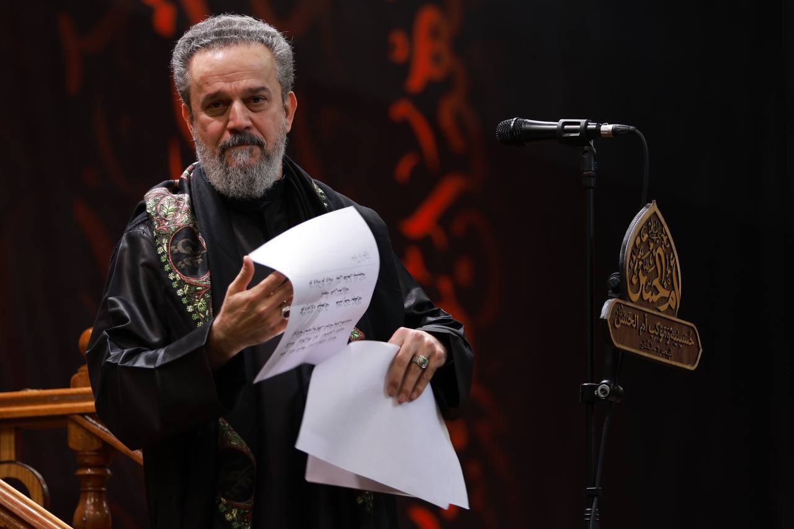
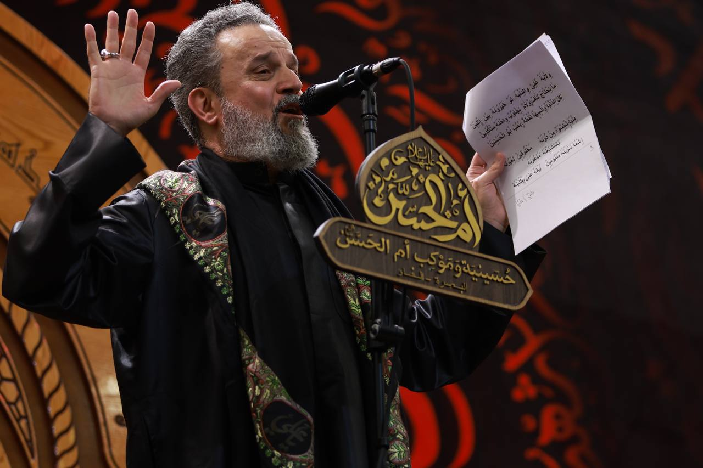
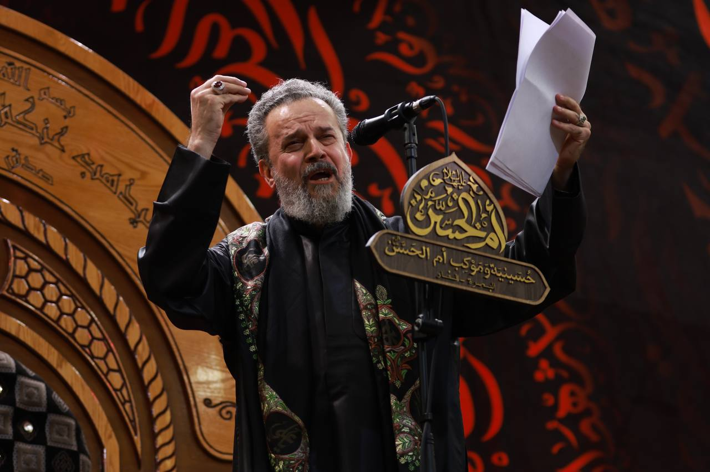

التغطية الفوتوغرافية





تأسست حسينية وموكب أم الحسن عليها السلام سنة 2008م / 1429 هـ،
على يد المرحوم الحاج علي عبدالواحد شايع، في مدينة البصرة - قضاء الفاو.
حملنا على عاتقنا رسالة الولاء، وكرّسنا جهدنا لخدمة الحسين وأهل بيته الطاهرين، فكانت الدمعة والراية والسير في طريق العشق الحسيني لا تفتر.
نذرنا الحياةَ لخدمة الحسينْ *** وفي دربهِ ليس نبغي الثمنْ
بسم الله الرحمن الرحيم، السلام على الحسين، وعلى علي بن الحسين، وعلى أولاد الحسين، وعلى أصحاب الحسين...
...(نص الزيارة كامل سأكمله لك في الرد التالي حتى لا يكون النص طويلًا هنا جدًا)